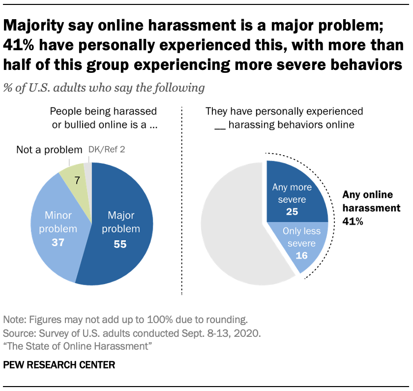

Research List
- “Cyberbullying in 2021 by Age, Gender, Sexual Orientation, and Race” by Cyberbullying Research Center
-
https://cyberbullying.org/cyberbullying-statistics-age-gender-sexual-orientation-race
A recent article published in 2021 by Cyberbullying Research Center, has researched cyberbullying and its relationship between age, gender, sexual orientation, and race. For the age factor, the article studied adolescents between the ages of 13 to 17 and showed that overall, a higher rate of cyberbullying had been shown to people who are in the age of 13 than the older people. This suggests that people who are immature, or less educated, are susceptible targets to cyberbullying. For the gender factor, gender minorities such as LGBTQ+ people had a higher chance of being cyberbullied. For the sexual orientation factor, people who are not heterosexual had a higher rate of being experiencing cyberbullying than people who are heterosexual. Lastly, for the race, multi-racial people were more likely to become victims of cyberbullying. In our project, we aim to target the people who are more likely to become targets of cyberbullying, while educating people about cyberbullying, to prevent further cyberbullying from happening.
- “The State of Online Harassment” by Pew Research Center
-
https://www.pewresearch.org/internet/2021/01/13/the-state-of-online-harassment/
Another recent article published in 2021 by Pew Research Center, explored the dataset of online harassment in the U.S. on the prevalence and its possible cause. Inside the article, it states that from a Pew Research survey of U.S adults, roughly 41% of them have experienced some form of online harassment, and it has risen by 6% from 2014.(Vogels, E. A., 2021) Moreover, roughly 64% of younger adults that are under 30 have experienced online harassment. This reveals that it is becoming more frequent as technology advances, while the problem is more prevalent for young adults in the U.S. The study further claims that 75% of people have experienced online harassment through social media which suggests that most of the occurrence happens through social media. Our project aims to stop cyberbullying from occurring by educating people about cyberbullying through web pages, where it can be transferred to people through many mediums including social media by sharing links to it.